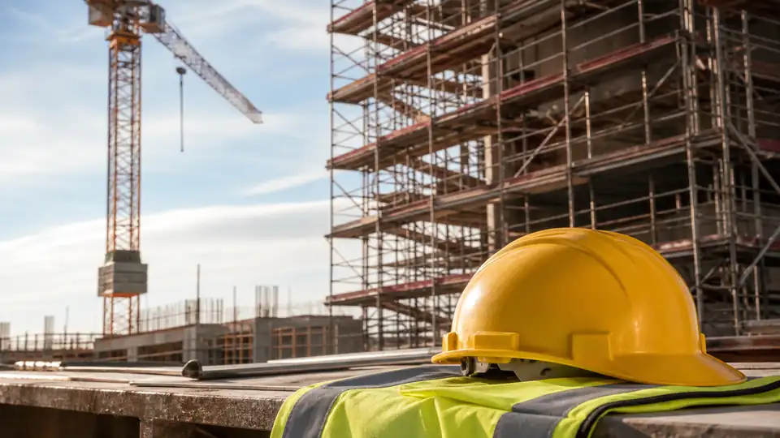
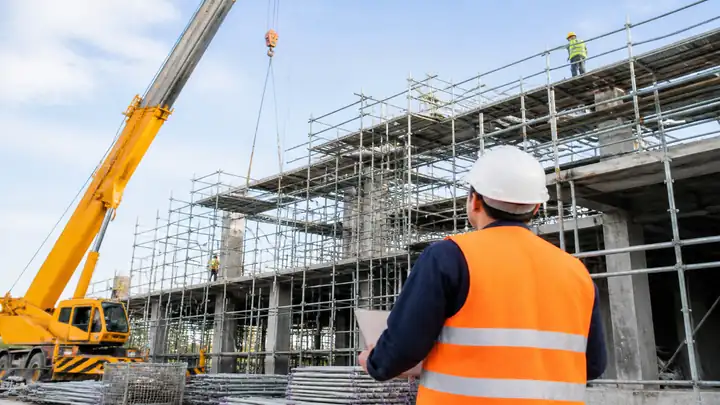
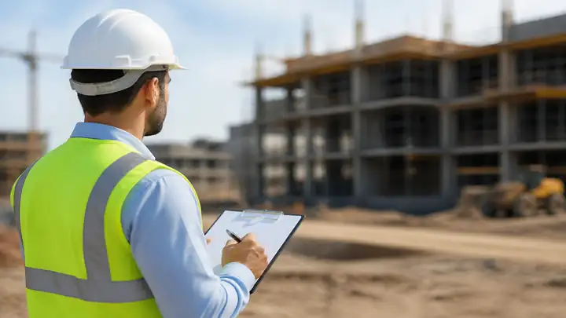
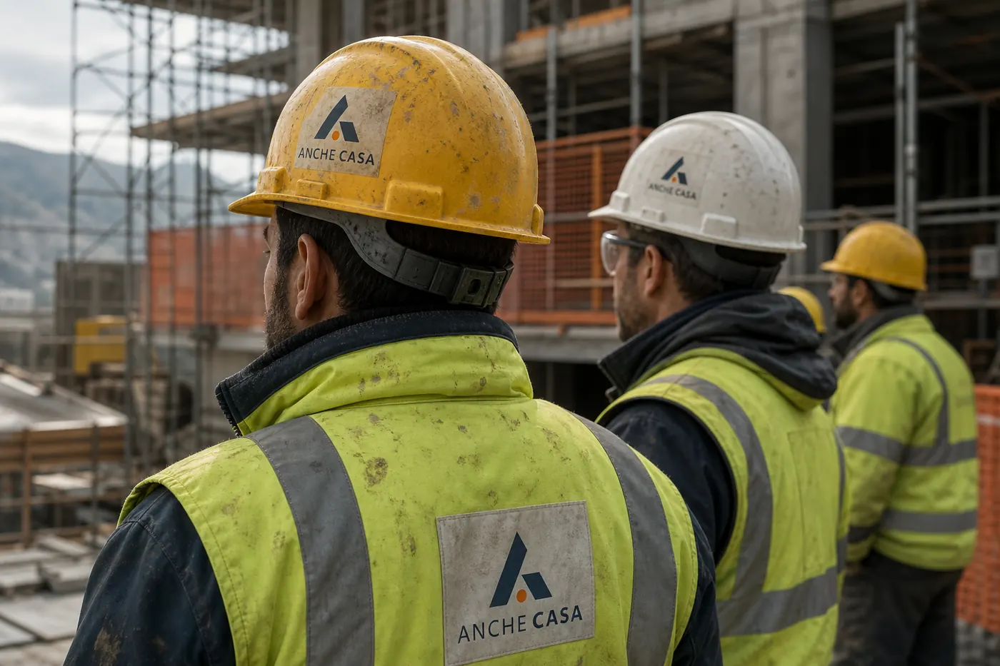

La rete
Aziende della sicurezza contrattualizzate in ogni regione: coordinamento, direzione lavori, RSPP e verifiche ispettive.

AncheSicura è la divisione di AncheCasa per la sicurezza, in tutta Italia e per tutte le aziende di AncheCasa. Dentro trovi aziende della sicurezza contrattualizzate in tutta Italia, scelte per seguire il tuo lavoro.
Scrivi ad AncheSicuraAziende della sicurezza contrattualizzate in ogni regione: coordinamento, direzione lavori, RSPP e verifiche ispettive.
Entri da AncheCasa e trovi la sicurezza già in carico. Ti segue AncheSicura, qualunque azienda della rete lavori sul tuo cantiere.
Geometri, ingegneri e architetti restano sul tuo incarico, vicino a dove lavori, in tutta Italia.

AncheSicura nasce dentro AncheCasa. Stessa piattaforma, stessa rete, un ramo dedicato alla sicurezza.

Ogni azienda della rete è contrattualizzata da AncheSicura e lavora con lo stesso metodo, in ogni città.

Entri in un percorso già organizzato. Coordinamento, RSPP e ispezioni non partono da un fascicolo vuoto.
Cosa seguono le aziende della rete. Coordinamento, RSPP e ispezioni restano incarichi distinti.

Coordinamento in fase di progetto e di esecuzione, piani di sicurezza e direzione lavori, dall’apertura alla chiusura del cantiere.
Incarico di RSPP, documento di valutazione dei rischi e rapporti con gli organi di vigilanza.
Controlli in cantiere e negli stabilimenti, con checklist e report su ogni visita.
Corsi obbligatori, abilitazioni e sorveglianza sanitaria per ogni mansione.
AncheSicura sceglie e contrattualizza le aziende. Tu hai un solo riferimento.
AncheSicura seleziona aziende della sicurezza in ogni regione e le contrattualizza. Lavorano tutte con lo stesso metodo.
L’incarico lo affidi ad AncheSicura. Il lavoro passa dalla piattaforma AncheCasa Sicurezza, con documenti e scadenze in un posto solo.
I settori che le aziende AncheSicura seguono ogni giorno.

Checklist, report e tracciabilità delle azioni. Norma, cantiere e persone restano sul tuo incarico.
Vedi i corsi